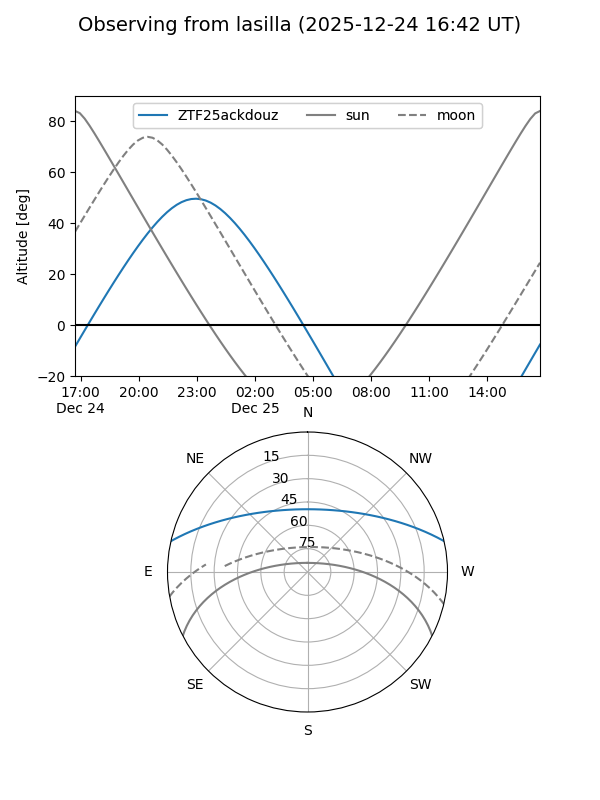
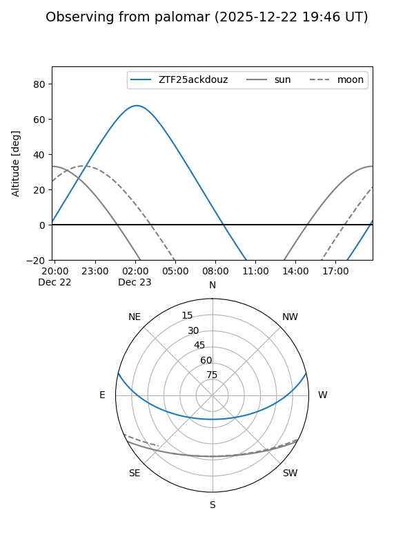
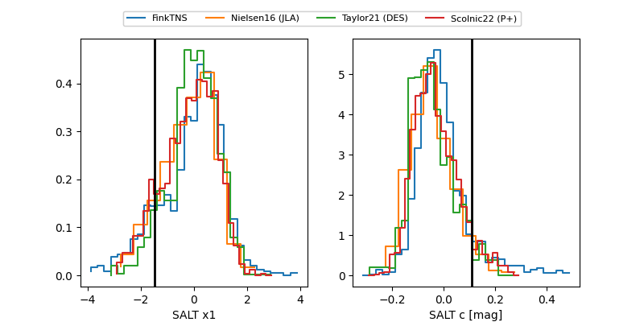

ZTF25ackdouz
Target ZTF25ackdouz at 2025-12-22 14:36
Aliases and brokers:
FINK: fink-portal.org/ZTF25ackdouz
Lasair: lasair-ztf.lsst.ac.uk/objects/ZTF25ackdouz
ALeRCE: alerce.online/object/ZTF25ackdouz
alt names
ZTF25ackdouz (ztf,fink_ztf)
Coordinates:
equatorial (ra, dec) = 6.6529,+10.94469
equatorial (HMS+DMS) = 00:26:36.69,+10:56:40.90
galactic (l, b) = (113.1243,-51.45367)
Flags:
Photometry:
last ztfg=20.50
1 ztfg detections
Lightcurve

Visibility


Additional plots
